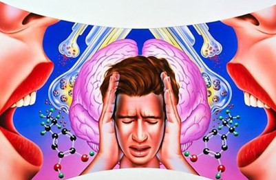

Síntomas Positivos - Negativos
Auditivas
El paciente escucha voces o sonidos inexistentes, que a menudo hacen comentarios sobre su comportamiento.
Visuales
Consisten en la percepción de cosas que no están presentes, como figuras humanas, sombras o luces brillantes.
Táctiles
Se manifiestan como sensaciones físicas sin un estímulo real, como la impresión de insectos arrastrándose sobre la piel o la sensación de ser tocado sin que haya nadie presente.
Olfativas y gustativas
Los pacientes pueden experimentar olores desagradables o extraños sabores sin explicación en su entorno.